Calculator OOP
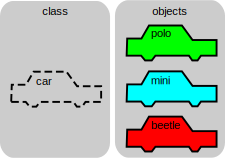
OOP Principles:
Encapsulation - Utilized within the calculator program primarily through its classes. Encapsulation seeks to
bundle data and methods into a single identifier. The Calculations class which contains a single attribute history as an initially
empty list has a total of 14 methods.
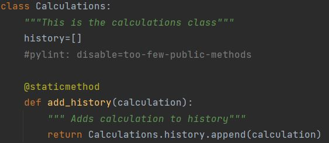
Inheritance - Inheritance is observed within the calculator program through the various calculator functions: Addition, Subtraction, Multiplication, and Division
which all inherit from the Calculation class (parent). The inheritance of the create method is shown (at the bottom of the page) and when the Calculations class
attempts to add an Addition/Subtraction/Multiplication/Division object to history.
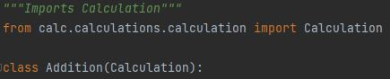
Where the Calculation class contains the create method:
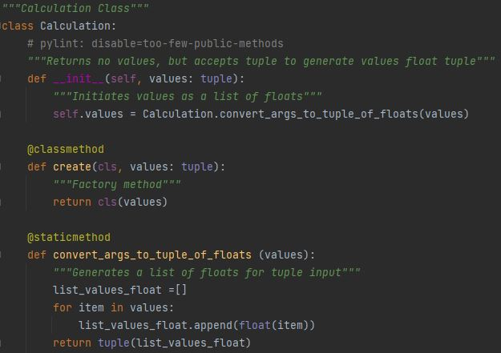
Polymorphism - Class Polymorphism is the most distinguished utilization of polymorphism within the calculator program.
The various classes: Addition/Subtraction/Multiplication/Division all utilize a common class method get_result (shown below).
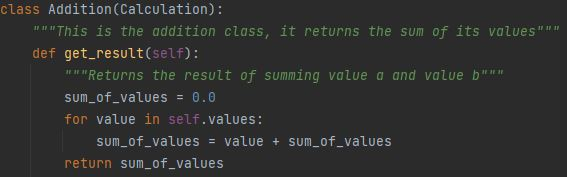
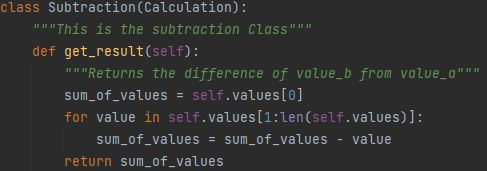
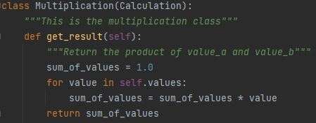
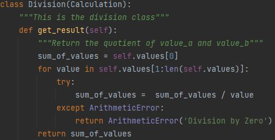
Abstraction - Abstraction is visibly apparent in the Calculator class of the program. Though instantiating an instance of a calculator enables
the user to access the add_number, subtract_number, divide_number, and multiple_number methods the true code which completes these tasks are not directly visible.
Furthering this, within the calculations class, that maintains the history functionality, the user is able to understand the functions
of getting the length of the history, recalling the last calculation object/result/etc. but does not observe how it is accomplished. For
instance, when the add_number method is called it accepts a tuple in the Calculator class.
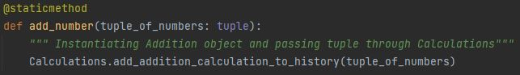
Following these commands to the "add_addition_calculation_to_history" method within Calculations...
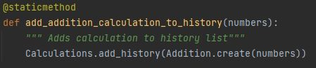
This leads to the addition class which utilizes inherited methods from the calculation class.
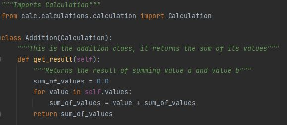
The Calculation parent class: